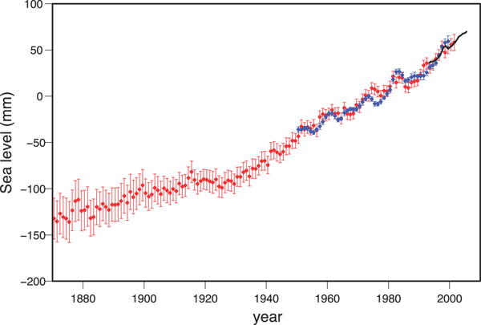
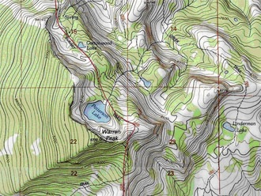

Data
Using Graphs and Visual Data in Science
Did you know?
Did you know that the phrase "a picture is worth a thousand words" certainly applied to science? Complex data can be very hard to understand without being displayed in a visual form, so scientist commonly use visual displays to help during data analysis.
Flip through any scientific journal or textbook and you'll notice quickly that the text is interspersed with graphs and figures. In some journals, as much as 30% of the space is taken up by graphs (Cleveland, 1984), perhaps surpassing the adage that "a picture is worth a thousand words." Although many magazines and newspapers also include graphs, the visual depiction of data is fundamental to science and represents something very different from the photographs and illustrations published in magazines and newspapers. Although numerical data are initially compiled in tables or databases, they are often displayed in a graphic form to help scientists visualize and interpret the variation, patterns, and trends within the data.
Data lie at the heart of any scientific endeavor. Scientists in different fields collect data in many different forms, from the magnitude and location of earthquakes, to the length of finch beaks, to the concentration of carbon dioxide in the atmosphere and so on. Visual representations of scientific data have been used for centuries – in the 1500s, for example, Copernicus drew schematic sketches of planetary orbits around the sun – but the visual presentation of numerical data in the form of graphs is a more recent development.
Using graphs to present numerical data
In 1786, William Playfair, a Scottish economist, published The Commercial and Political Atlas, which contained a variety of economic statistics presented in graphs. Among these was the image shown in Figure 1, a graph comparing exports from England with imports into England from Denmark and Norway from 1708 to 1780 (Playfair, 1786). (Incidentally, William Playfair was the brother of John Playfair, the geologist who elucidated James Hutton's fundamental work on geological processes to the broader public.
Playfair's graph displayed a powerful message very succinctly. The graph shows time on the horizontal (x) axis and money in English pounds on the vertical (y) axis. The yellow line shows the monetary value of imports to England from Denmark and Norway; the red line shows the monetary value of exports to Denmark and Norway from England. Although a table of numerical data would show the same information, it would not be immediately apparent that something important happened in about 1753: England began exporting more than it imported, placing the "balance in favour of England." This simple visualization of a large numerical dataset made it easy to comprehend quickly.
Graphs and figures quickly became standard components of science and scientific communication, and the use of graphs has increased dramatically in scientific journals in recent years, almost doubling from an average of 35 graphs per journal issue to more than 60 between 1985 and 1994 (Zacks et al., 2002). This increase has been attributed to a number of causes, including the use of computer software programs that make producing graphs easy, as well as the production of increasingly large and complex datasets that require visualization to be interpreted.
Graphs are not the only form of visualized data, however – maps, satellite imagery, animations, and more specialized images like atomic orbital depictions are also composed of data, and have also become more common. Creating, using, and reading visual forms of data is just one type of data analysis and interpretation (see our Data Analysis and Interpretation module), but it is ubiquitous throughout all fields and methods of scientific investigation.
Interpreting graphs
The majority of graphs published in scientific journals relate two variables. As many as 85% of graphs published in the journal Science, in fact, show the relationship between two variables, one on the x-axis and another on the y-axis (Cleveland, 1984). Although many other kinds of graphs exist, knowing how to fully interpret a two-variable graph can not only help anyone decipher the vast majority of graphs in the scientific literature but also offers a starting point for examining more complex graphs. As an example, imagine trying to identify any long-term trends in the data table that follows of atmospheric carbon dioxide concentrations taken over several years at Mauna Loa (Table 1; click on the excerpt below to see the complete data table).
The variables are straightforward – time in months in the top row of the table, years in the far left column of the table, and carbon dioxide (CO2) concentrations within the individual table cells. Yet, it is challenging for most people to make sense of that much numerical information. You would have to look carefully at the entire table to see any trends. But if we take the exact same data and plot it on a graph, this is what it looks like (Figure 2):
Reading a graph involves the following steps:
Describing the graph: The x-axis shows the variable of time in units of years, and the y-axis shows the range of the variable of CO2 concentration in units of parts per million (ppm). The dots are individual measurements of concentrations – the numbers shown in Table 1. Thus, the graph is showing us the change in atmospheric CO2 concentrations over time.
Describing the data and trends: The line connects consecutive measurements, making it easier to see both the short- and long-term trends within the data. On the graph, it is easy to see that the concentration of atmospheric CO2 steadily rose over time, from a low of about 315 ppm in 1958 to a current level of about 375 ppm. Within that long-term trend, it's also easy to see that there are short-term, annual cycles of about 5 ppm.
Making interpretations: On the graph, scientists can derive additional information from the numerical data, such as how fast CO2 concentration is rising. This rate can be determined by calculating the slope of the long-term trend in the numerical data, and seeing this rate on a graph makes it easily apparent. While a keen observer may have been able to pick out of the table the increase in CO2 concentrations over the five decades provided, it would be difficult for even a highly trained scientist to note the yearly cycling in atmospheric CO2 in the numerical data – a feature elegantly demonstrated in the sawtooth pattern of the line.
Putting data into a visual format is one step in data analysis and interpretation, and well-designed graphs can help scientists interpret their data. Interpretation involves explaining why there is a long-term rise in atmospheric CO2 concentrations on top of an annual fluctuation, thus moving beyond the graph itself to put the data into context. Seeing the regular and repeating cycle of about 5 ppm, scientists realized that this fluctuation must be related to natural changes on the planet due to seasonal plant activity. Visual representation of these data also helped scientists to realize that the increase in CO2 concentrations over the five decades shown occurs in parallel with the industrial revolution and thus are almost certainly related to the growing number of human activities that release CO2 (IPCC, 2007).
It is important to note that neither one of these trends (the long-term rise or the annual cycling) nor the interpretation can be seen in a single measurement or data point. That's one reason why you almost never hear scientists use the singular of the word data – datum. Imagine just one point on a graph. You could draw a trend line going through it in any direction. Rigorous scientific practice requires multiple data points to make a clear interpretation, and a graph can be critical not only in showing the data themselves, but in demonstrating on how much data a scientist is basing his or her interpretation.
We just followed a short, logical process to extract a lot of information from this graph. Although an infinite variety of data can appear in graphical form, this same procedure can apply when reading any kind of graph. To reiterate:
- Describe the graph: What does the title say? What variable is represented on the x-axis? What is on the y-axis? What are the units of measurement? What do the symbols and colors mean?
- Describe the data: What is the numerical range of the data? What kinds of patterns can you see in the distribution of the data as they are plotted?
- Interpret the data: How do the patterns you see in the graph relate to other things you know?
The same questions apply whether you are looking at a graph of two variables or something more complex. Because creating graphs is a form of data analysis and interpretation, it is important to scrutinize a scientist's graphs as much as his or her written interpretation.
Comprehension Checkpoint
Graphs are important because they
Error and uncertainty estimation in visual data
Graphs and other visual representations of scientific information also commonly contain another key element of scientific data analysis – a measure of the uncertainty or error within measurements (see our Uncertainty, Error, and Confidence module). For example, the graph in Figure 3 presents mean measurements of mercury emissions from soil at various times over the course of a single day. The error bars on each vertical bar provide the standard deviation of each measurement. These error bars are included to demonstrate that the change in emissions with time are greater than the inherent variability within each measurement (see our Statistics in Science module for more information).
Graphical displays of data can also be used not just to display error, but to quantify error and uncertainty in a system. For example, Figure 4 shows a gas chromatograph of a fuel oil spill. Peaks in the chromatograph (the blue line) provide information about the chemicals identified in the spill, and the peak size can provide an estimate of the relative concentration of that specific chemical in the spill. However, before this information can be extracted from the graph, instrument error and uncertainty must be calculated (the red line) and subtracted from the peak area. As you can see in Figure 4, instrument variability decreases as you move from left to right in the graph, and in this case, the graphical display of the error is therefore critical to accurate analysis of the data.
Comprehension Checkpoint
Graphical displays of data are used to __ error.
Misuse of scientific images
Poor use of graphics can highlight trends that don't really exist, or can make real trends disappear. Some have tried to point out errors with the now widely accepted notion of climate change by using misleading graphics. Figure 5, below, is one such graphic that has appeared in print. The point drawn by the creator of this is that the bottom graph, which shows relatively little change in temperature over the past 1,000 years, disputes the top graph used by the Intergovernmental Panel on Climate Change that shows a recent, rapid temperature increase.
At first glance the bottom graph does seem to contradict the top graph. However, looking more closely you realize:
- The two graphs actually represent completely different datasets. The top graph is a representation of change in annual mean global temperature normalized to a 30-year period, 1960-1990, whereas the bottom graph represents average temperatures in Europe compared to an average over the 20th-century.
- In addition, the y-axes of the two graphs are displayed on differing scales – the bottom graph has more space between the 0.5° lines.
Both of these techniques tend to exaggerate the variability in the lower graph. However, the primary reason for the difference in the graphs is not actually shown in the graphs. The author of the graphic created the image on the bottom using different calculations that did not take into account all of the variables that climate scientists used to create the top graph. In other words, the graphs simply do not show the same data.
These are common techniques used to distort visual forms of data – manipulating axes, changing one of the variables in a comparison, changing calculations without full explanation – that can obscure a true comparison.
Visualizing spatial and three-dimensional data
There are other kinds of visual data aside from graphs. You might think of a topographic map or a satellite image as a picture or a sketch of the surface of the earth, but both of these images are ways of visualizing spatial data. A topographic map shows data collected on elevation and the location of geographic features like lakes or mountain peaks (see Figure 6). These data may have been collected in the field by surveyors or by looking at aerial photographs, but nonetheless the map is not a picture of a region – it is a visual representation of data. The topographic map in Figure 6 is actually accomplishing a second goal beyond simply visualizing data: It is taking three-dimensional data (variations in land elevation) and displaying them in two dimensions on a flat piece of paper.
Likewise, satellite images are commonly misunderstood to be photographs of the Earth from space, but in reality they are much more complex than that. A satellite records numerical data for each pixel, and it does so at certain predefined wavelengths in the electromagnetic spectrum (see our Light II: Electromagnetism module for more information). In other words, the image itself is a visualization of data that has been processed from the raw data received from the satellite. For example, the Landsat satellites record data in seven different wavelengths: three in the visible spectrum and four in the infrared wavelengths. The composite image of four of those wavelengths is displayed in the image of a portion of the Colorado Rocky Mountains shown in Figure 7. The large red region in the lower portion of the image is not red vegetation in the mountains; instead, it is a region with high values for emission of infrared (or thermal) wavelengths. In fact, this region was the site of a large forest fire, known as the Hayman Fire, a month prior to the acquisition of the satellite image in July 2002.
Comprehension Checkpoint
Graphical displays of data are used to __ error.
Working with image-based data
The advent of satellite imagery vastly expanded one data collection method: extracting data from an image. For example, from a series of satellite images of the Hayman Fire acquired while it was burning, scientists and forest managers were able to extract data about the extent of the fire (which burned deep into National Forest land where it could not be monitored by people on the ground), the rate of spread, and the temperature at which it was burning. By comparing two satellite images, they could find the area that had burned over the course of a day, a week, or a month. Thus, although the images themselves consist of numerical data, additional information can be extracted from these images as a form of data collection.
Another example can be taken from the realm of atomic physics. In 1666, Sir Isaac Newton discovered that when light from the sun is passed through a prism, it separates into a characteristic rainbow of light. Almost 200 years after Newton, John Herschel and W. H. Fox Talbot demonstrated that when substances are heated and the light they give off is passed through a prism, each element gives off a characteristic pattern of bright lines of color, but they did not understand why (see Figure 8). In 1913, the Danish physicist Niels Bohr used these images to make a startling proposal: He suggested that the line spectra of elements were due to the movement of electrons between different orbitals, and thus these spectra could provide information regarding the electron configuration of the elements (see our Atomic Theory II: Ions, Isotopes, and Electron Shells module for more information). You can actually calculate the potential energy difference between electron orbitals in atoms by analyzing the color (and thus wavelength) of light emitted.
Photographs and videos are also visual data. In 2005, a group of scientists based in part at the Cornell Ornithology lab published their findings that a bird believed to be extinct in North America, the Ivory-billed Woodpecker, had been spotted in Arkansas (Fitzpatrick et al., 2005). Their primary evidence consisted of video footage and photographs of a bird in flight, which they included in their paper along with a detailed analysis of the features of the images and video that suggested that the bird was an Ivory-billed Woodpecker. (You can read the article and see the photographs here.)
Graphs for scientific communication
Many areas of study within science have more specialized graphs used for specific kinds of data. Evolutionary biologists, for example, use evolutionary trees or cladograms to show how species are related to each other, what characteristics they share, and how they evolve over time. Geologists use a type of graph called a stereonet that represents the inside of a hemisphere in order to depict the orientation of rock layers in three-dimensional space. Many fields now use three-dimensional graphs to represent three variables, though they may not actually represent three-dimensional space.
Regardless of the exact type of graph, the creation of clear, understandable visualizations of data is of fundamental importance in all branches of science. In recognition of the critical contribution of visuals to science, the National Science Foundation and the American Association for the Advancement of Science sponsor an annual Science and Engineering Visualization Challenge, in which submissions are judged based on their visual impact, effective communication, and originality (NSF, 2007). Likewise, reading and interpreting graphs is a key skill at all levels, from the introductory student to the research scientist. Graphs are a key component of scientific research papers, where new data are routinely presented. Presenting the data from which conclusions are drawn allows other scientists the opportunity to analyze the data for themselves, a process whose purpose is to keep scientific experiments and analysis as objective as possible. Although tables are necessary to record the data, graphs allow readers to visualize complex datasets in a simple, concise manner.
Summary
Understanding graphs and other visual forms of data is an important skill for scientists. This module describes how to read and interpret graphs and introduces other types of visual data. With a look at various examples, it is clear how trends can be grasped easily when the data is shown in a visual form.
Key Concepts
- Visual representations of data are essential for both data analysis and interpretation.
- Visualization highlights trends and patterns in numeric datasets that might not otherwise be apparent.
- Understanding and interpreting graphs and other visual forms of data is a critical skill for scientists and students of science.
QUIZ
- What information is shown on the x-axis of the graph? 
- What information is shown on the y-axis of the graph?
- Which statement best desbribes the error associated with the measurements displayed in this graph?
- Which of the following statements best describes the trend of sea level as shown in the graph?
- Which measurements have less error associated with them - the red or blue measurements?
- Why is it useful to present data in a visual way, rather than simply listing it?
- Review the topographic map shown below of a portion of the Warren Peak USGS 7.5'. Based on this image, what kind of information does this map provide? 
(A)__The error increases with time.
(B)__The error decreases with time.
(C)__The error stays the same over time.
(D)__There is no error with these measurements.
(A)__Sea level jumps around a lot over time.
(B)__Sea level descreases steadily throgh time.
(C)__Sea level increases steadily through time.
(D)__Sea level increases, but not steadily
(B)__Both have the same amount of error.
(C)__Neither has any error associated with it.
(A)__Visual representations break up the text in a scientific article so it is easier to read.
(B)__Visual representations let us see things we can't see otherwise, such as trends.
(C)__Visual representations let us see where we made errors in our data collection.
(D)__Visual representations make reading scientific articles more interesting.
(A)__the elevation and contours of the Warren Peak area
(B)__the GPS location of specific peaks in the area